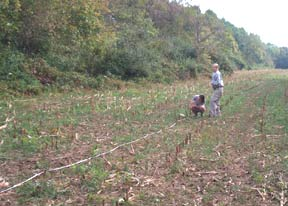

This program, begun in 2007, is designed to identify, evaluate and register archeological resources in Maryland. The program will target locations where interest in local preservation programs is growing, where archeological resources are threatened, and where archeological information needs are greatest. The program includes, fieldwork, lab work, artifact analysis, and completion of forms are reports required to register sites within the state. The survey program is run in cooperation with the State Office of Archeology.
The survey program serves a dual purpose in that in addition to completion of survey and evaluation of archeological sites, members of the Society can experience a vital part of the archeological process. Volunteers will carry out the work of locating sites, establishing survey parameters, exploring the contents of the site, evaluating data collected and preparing the paperwork required to register the site. Work at some of these sites may carry over to larger projects and may even result in use of the site for the Annual Field Session.

